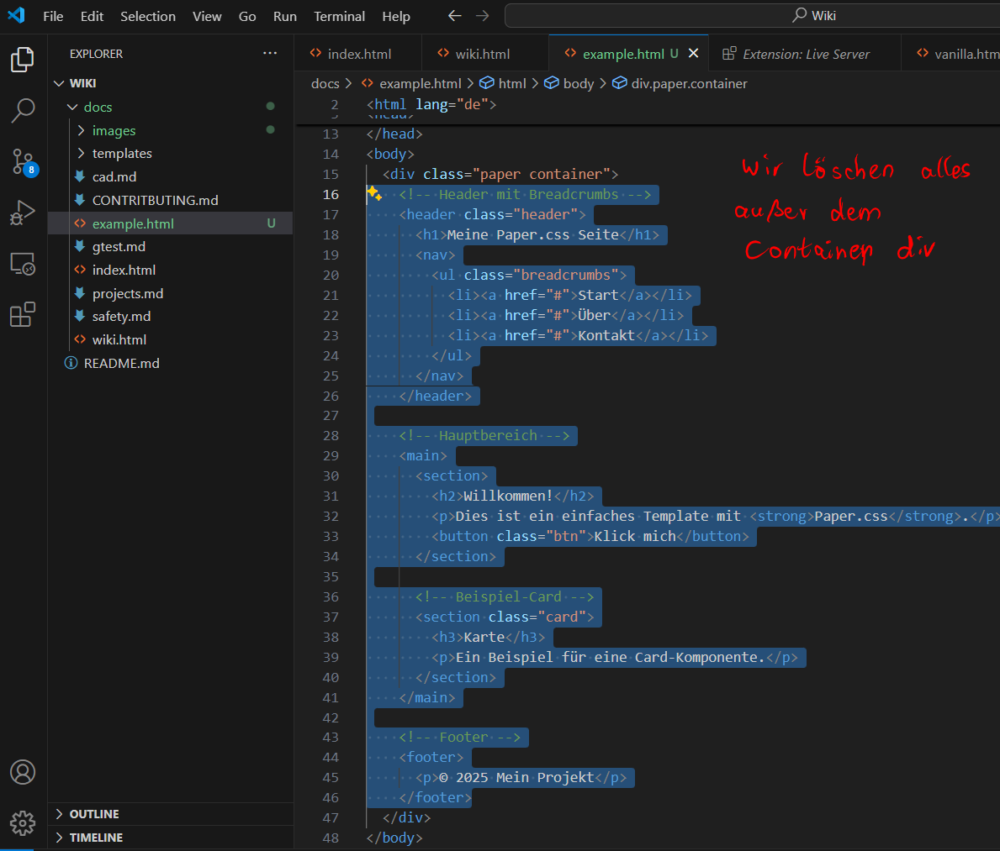

üìö B7 Wiki - Development
Der einfache Weg ist mit Markdown, schnell verfasst, grob übersichtlich, fein.
Wer etwas mehr Power benötigt setzt auf Html5.
Richtig Fancy wird's mit eigenem CSS oder sogar Frameworks wie Bootstrap.
Javascript und coole Animationen sind die Königsdisziplin! Ich verweise z.B. auf SuperScrollorama
Kollab - so arbeite ich am Wiki (Github Einrichtung - Anmeldung B7Lab)
Markdown
Html 5
Vorlagen
üìñ kleines TutorialGithub
Sign up und Kolaboration
- Wenn du noch keinen Account hast, trage hier bitten dein E-Mail Adresse ein und klicke auf "Sign up for GiHub", ansonsten Logge dich mit deinen Zugangsdaten ein.
- Issue er√∂ffnen: ‚Äûüìù Add me as collaborator‚Äú
- Einladung abwarten und annehmen (Es kann durchaus mal ein paar Tage dauern, also bitte etwas Geduld!

Git for Windows
- Git for Windows herunterladen (https://git-scm.com/downloads/win)
- Installieren und munter immer auf weiter klicken, es sind dutzende Male! Noch nie so viele Weiter Buttons geklickt!
- Wenn Git installiert ist lässt es sich mit einem Rechtsklick in den Ordner und dem Eintrag GitBash here öffnen.
Kollaboration Workflow
- Wiki klonen & Feature‑Branch anlegen
git clone https://github.com/B7lab/Wiki.git- Seiten auf den neuesten Stand updaten
git pull- Seiten bearbeiten und aktualisieren
git add .git commit -m "Mein Kommentar"- Änderungen pushen (Wiki-update Live Schalten)
git push

Markdown
Ein einfacher Absatz folgt hier einfach nach einer Leerzeile.Ein einfacher Absatz folgt hier einfach nach einer Leerzeile.
**Fett** und *Kursiv*Fett und Kursiv
~~Durchgestrichen~~Durchgestrichen
Listen
- Punkt 1
- Punkt 2
- Unterpunkt- Punkt 1
- Punkt 2
- Unterpunkt
1. Erster
2. Zweiter
3. Dritter- Erster
- Zweiter
- Dritter
[OpenAI](https://openai.com)`Inline Code`Inline Code
```
Mehrzeiliger Codeblock
mit Inhalt
```Mehrzeiliger Codeblock
mit Inhalt
> Dies ist ein BlockzitatDies ist ein Blockzitat
---
Horizontale LinieHorizontale Linie
- [x] Erledigt
- [ ] Offen- Erledigt
- Offen
Überschriften
# Überschrift 1
## Überschrift 2
### Überschrift 3
#### Überschrift 4
##### Überschrift 5
###### Überschrift 6
Überschrift 1
Überschrift 2
Überschrift 3
Überschrift 4
Überschrift 5
Überschrift 6
Paragraphen
Ein einfacher Absatz folgt hier einfach nach einer Leerzeile.
Ein weiterer Absatz folgt hier einfach nach einer Leerzeile.
Ein einfacher Absatz folgt hier einfach nach einer Leerzeile.
Ein weiterer Absatz folgt hier einfach nach einer Leerzeile.
Listen
- Liste 1
- Unterliste 1.1
- Unterliste 1.2
- Liste 2
- Unterliste 2.1
- Unterliste 2.2
1. Nummerierte Liste 1
1. Unterliste 1.1
2. Unterliste 1.2
2. Nummerierte Liste 2
1. Unterliste 2.1
2. Unterliste 2.2
- Liste 1
- Unterliste 1.1
- Unterliste 1.2
- Liste 2
- Unterliste 2.1
- Unterliste 2.2
- Nummerierte Liste 1
- Unterliste 1.1
- Unterliste 1.2
- Nummerierte Liste 2
- Unterliste 2.1
- Unterliste 2.2
Code
`Inline Code`
```python
def begruessung(name):
print(f"Hallo, {name}!")
```
Inline Code
def begruessung(name):
print(f"Hallo, {name}!")
Hyperlinks
[Linktext](https://example.com)
Bilder
HTML5
Überschriften
<h1>Heading 1</h1>Heading 1
<h2>Heading 2</h2>Heading 2
<h3>Heading 3</h3>Heading 3
<h4>Heading 4</h4>Heading 4
<h5>Heading 5</h5>Heading 5
Text
<p>Dies ist ein Absatz.</p>Dies ist ein Absatz.
Hypelink
<a href="https://example.com">Hyper-Link</a>Fett und kursiv
<b>Fetter Text</b><i>Kursiver Text</i>Semantische Elemente
<header>
…Kopfbereich mit Logo, Navigation o. Ä.…
</header>
<nav>
…Hauptnavigation oder Seitennavigation…
</nav>
<main>
…Hauptinhalt der Seite…
</main>
<section>
…Themenbereich oder Kapitel innerhalb von <main>…
</section>
<article>
…Eigenständiger Inhalt, z. B. Blog‑Eintrag oder News‑Post…
</article>
<aside>
…Randnotizen, Sidebar‑Inhalte oder ergänzende Infos…
</aside>
<footer>
…Fußbereich mit Copyright, Links, Kontakt…
</footer>
<figure>
…Medien‑Container, z. B. Bild oder Diagramm…
<figcaption>…Bildunterschrift…</figcaption>
</figure>
<details>
<summary>…Überschrift/Demo…</summary>
…ausklappbarer Inhalt…
</details>
<div>
…generischer Container ohne spezielle Semantik…
</div>
Listen
<ul>
<li>Apfel</li>
<li>Banane</li>
<li>Kirsche</li>
</ul>
- Apfel
- Banane
- Kirsche
<ol>
<li>Erster Schritt</li>
<li>Zweiter Schritt</li>
<li>Dritter Schritt</li>
</ol>
- Erster Schritt
- Zweiter Schritt
- Dritter Schritt
Tabellen
<table>
<thead>
<tr>
<th>Name</th>
<th>Alter</th>
</tr>
</thead>
<tbody>
<tr>
<td>Anna</td>
<td>28</td>
</tr>
<tr>
<td>Ben</td>
<td>34</td>
</tr>
</tbody>
</table>
| Name | Alter |
|---|---|
| Anna | 28 |
| Ben | 34 |
Code (Beispiel in python)
<pre><code class="language-python">
def begruessung(name):
print(f"Hallo, {name}!")
begruessung("Welt")
</code></pre>
def begruessung(name):
print(f"Hallo, {name}!")
begruessung("Welt")
Bilder
<img src="https://example.com/image.jpg" alt="Beschreibung des Bildes">

Icons
<!-- Font Awesome CDN einbinden -->
<link rel="stylesheet" href="https://cdnjs.cloudflare.com/ajax/libs/font-awesome/6.5.0/css/all.min.css">
<!-- Beispiel-Icons -->
<i class="fas fa-home"></i> Startseite
<i class="fas fa-envelope"></i> Kontakt
<i class="fas fa-user"></i> Profil
Startseite Kontakt Profil
Schriftarten
<!-- Google Fonts Einbindung -->
<link href="https://fonts.googleapis.com/css2?family=Roboto&display=swap" rel="stylesheet">
<link href="https://fonts.googleapis.com/css2?family=Playfair+Display&display=swap" rel="stylesheet">
<link href="https://fonts.googleapis.com/css2?family=Press+Start+2P&display=swap" rel="stylesheet">
<style>
.roboto {
font-family: 'Roboto', sans-serif;
}
.playfair {
font-family: 'Playfair Display', serif;
}
.pixel {
font-family: 'Press Start 2P', monospace;
}
</style>
<p class="roboto">Dies ist Roboto – eine moderne Sans-Serif Schrift.</p>
<p class="playfair">Dies ist Playfair Display – elegant und serif.</p>
<p class="pixel">Dies ist Press Start 2P – Retro-Vibes im Pixel-Look!</p>
Dies ist Roboto – eine moderne Sans-Serif Schrift.
Dies ist Playfair Display – elegant und serif.
Dies ist Press Start 2P – Retro-Vibes im Pixel-Look!
CSS - Stylesheets
<!-- Bootstrap 5 CSS über CDN einbinden -->
<link href="https://cdn.jsdelivr.net/npm/bootstrap@5.3.0/dist/css/bootstrap.min.css" rel="stylesheet">
<!-- Beispielnutzung: Button -->
<button class="btn btn-primary">Klick mich</button>
Javascripts
<!-- JavaScript von CDN (hier: jQuery) -->
<script src="https://code.jquery.com/jquery-3.7.1.min.js"></script>
<!-- Eigener Inline-Scriptblock -->
<script>
$(document).ready(function() {
$('#gruss').text('Hallo Welt!');
});
</script>
<p id="gruss">Wird ersetzt...</p>
Wird ersetzt...
CDN - Frameworks
CSS
<!-- üìÑ PaperCSS -->
<link rel="stylesheet" href="https://unpkg.com/papercss@1.9.2/dist/paper.min.css">
<!-- üé® jQuery UI CSS -->
<link rel="stylesheet" href="https://code.jquery.com/ui/1.13.2/themes/base/jquery-ui.css">
<!-- üì± jQuery Mobile CSS -->
<link rel="stylesheet" href="https://code.jquery.com/mobile/1.4.5/jquery.mobile-1.4.5.min.css">
<!-- üß© Bootstrap 4 CSS -->
<link rel="stylesheet" href="https://stackpath.bootstrapcdn.com/bootstrap/4.5.2/css/bootstrap.min.css">
<!-- üåÄ Tailwind CSS (via CDN) -->
<script src="https://cdn.tailwindcss.com"></script>
JavaScript
<!-- üìÑ PaperCSS ben√∂tigt kein eigenes JS -->
<!-- üé® jQuery UI JS (jQuery Voraussetzung!) -->
<script src="https://code.jquery.com/jquery-3.6.0.min.js"></script>
<script src="https://code.jquery.com/ui/1.13.2/jquery-ui.min.js"></script>
<!-- üì± jQuery Mobile JS (jQuery Voraussetzung!) -->
<script src="https://code.jquery.com/jquery-3.6.0.min.js"></script>
<script src="https://code.jquery.com/mobile/1.4.5/jquery.mobile-1.4.5.min.js"></script>
<!-- üß© Bootstrap 4 JS (ben√∂tigt Popper.js & jQuery) -->
<script src="https://code.jquery.com/jquery-3.6.0.min.js"></script>
<script src="https://cdn.jsdelivr.net/npm/popper.js@1.16.1/dist/umd/popper.min.js"></script>
<script src="https://stackpath.bootstrapcdn.com/bootstrap/4.5.2/js/bootstrap.min.js"></script>
<!-- üåÄ Tailwind ben√∂tigt kein JS (optional AlpineJS usw.) -->
<!-- Beispiel: AlpineJS -->
<script src="https://cdn.jsdelivr.net/npm/alpinejs@3.x.x/dist/cdn.min.js" defer></script>
Vorlagen
Paper CSS
<!DOCTYPE html>
<html lang="de">
<head>
<meta charset="UTF-8">
<meta name="viewport" content="width=device-width, initial-scale=1.0">
<title>Paper.css Template</title>
<!-- Paper.css via unpkg CDN -->
<link
rel="stylesheet"
href="https://unpkg.com/papercss@1.9.2/dist/paper.min.css"
> <!-- :contentReference[oaicite:0]{index=0} -->
</head>
<body>
<div class="paper container">
<!-- Header mit Breadcrumbs -->
<header class="header">
<h1>Meine Paper.css Seite</h1>
<nav>
<ul class="breadcrumbs">
<li><a href="#">Start</a></li>
<li><a href="#">Über</a></li>
<li><a href="#">Kontakt</a></li>
</ul>
</nav>
</header>
<!-- Hauptbereich -->
<main>
<section>
<h2>Willkommen!</h2>
<p>Dies ist ein einfaches Template mit <strong>Paper.css</strong>.</p>
<button class="btn">Klick mich</button>
</section>
<!-- Beispiel-Card -->
<section class="card">
<h3>Karte</h3>
<p>Ein Beispiel für eine Card-Komponente.</p>
</section>
</main>
<!-- Footer -->
<footer>
<p>© 2025 Mein Projekt</p>
</footer>
</div>
</body>
</html>
JQuery-UI
<!DOCTYPE html>
<html lang="de">
<head>
<meta charset="UTF-8">
<title>jQuery UI Template</title>
<meta name="viewport" content="width=device-width, initial-scale=1">
<!-- jQuery UI CSS -->
<link
rel="stylesheet"
href="https://code.jquery.com/ui/1.14.1/themes/base/jquery-ui.css"
> <!-- :contentReference[oaicite:0]{index=0} -->
<!-- Optional: eigenes Styling -->
<style>
body { font-family: sans-serif; padding: 2rem; }
.widget { margin-top: 1.5rem; }
</style>
</head>
<body>
<h1>jQuery UI Demo</h1>
<!-- Datepicker-Widget -->
<div class="widget">
<label for="datepicker">Datum wählen:</label>
<input type="text" id="datepicker">
</div>
<!-- Accordion-Widget -->
<div class="widget" id="accordion">
<h3>Abschnitt 1</h3>
<div>
<p>Inhalt für Abschnitt 1.</p>
</div>
<h3>Abschnitt 2</h3>
<div>
<p>Inhalt für Abschnitt 2.</p>
</div>
<h3>Abschnitt 3</h3>
<div>
<p>Inhalt für Abschnitt 3.</p>
</div>
</div>
<!-- jQuery -->
<script
src="https://code.jquery.com/jquery-3.7.1.min.js"
></script> <!-- :contentReference[oaicite:1]{index=1} -->
<!-- jQuery UI -->
<script
src="https://code.jquery.com/ui/1.14.1/jquery-ui.min.js"
></script> <!-- :contentReference[oaicite:2]{index=2} -->
<!-- Initialisierung der Widgets -->
<script>
$(function() {
// Datepicker aktivieren
$("#datepicker").datepicker();
// Accordion aktivieren
$("#accordion").accordion({
heightStyle: "content"
});
});
</script>
</body>
</html>
JQuery-Mobile
<!DOCTYPE html>
<html lang="de">
<head>
<meta charset="UTF-8">
<meta name="viewport" content="width=device-width, initial-scale=1">
<title>jQuery Mobile Template</title>
<!-- jQuery Mobile CSS -->
<link
rel="stylesheet"
href="https://cdnjs.cloudflare.com/ajax/libs/jquery-mobile/1.4.5/jquery.mobile.min.css"
> <!-- :contentReference[oaicite:0]{index=0} -->
</head>
<body>
<!-- „Seite“ im jQuery-Mobile‑Stil -->
<div data-role="page" id="home">
<div data-role="header">
<h1>Meine jQM Seite</h1>
</div>
<div data-role="content">
<p>Willkommen auf meiner mobilen Seite!</p>
<a href="#dialog" data-role="button">Dialog öffnen</a>
</div>
<div data-role="footer">
<h4>© 2025</h4>
</div>
</div>
<!-- Ein einfacher Dialog -->
<div data-role="page" id="dialog">
<div data-role="header">
<h1>Dialog</h1>
</div>
<div data-role="content">
<p>Das ist ein Inline‑Dialog.</p>
<a href="#home" data-role="button" data-rel="back">Zurück</a>
</div>
</div>
<!-- jQuery Core -->
<script
src="https://code.jquery.com/jquery-3.7.1.min.js"
></script> <!-- :contentReference[oaicite:1]{index=1} -->
<!-- jQuery Mobile JS -->
<script
src="https://cdnjs.cloudflare.com/ajax/libs/jquery-mobile/1.4.5/jquery.mobile.min.js"
></script> <!-- :contentReference[oaicite:2]{index=2} -->
</body>
</html>
Bootstrap
<!doctype html>
<html lang="en">
<head>
<meta charset="utf-8">
<meta name="viewport" content="width=device-width, initial-scale=1, shrink-to-fit=no">
<meta name="description" content="">
<meta name="author" content="Mark Otto, Jacob Thornton, and Bootstrap contributors">
<meta name="generator" content="Jekyll v3.8.5">
<title>Jumbotron Template · Bootstrap</title>
<link rel="canonical" href="https://getbootstrap.com/docs/4.3/examples/jumbotron/">
<!-- Bootstrap core CSS -->
<link href="/docs/4.3/dist/css/bootstrap.min.css" rel="stylesheet" integrity="sha384-ggOyR0iXCbMQv3Xipma34MD+dH/1fQ784/j6cY/iJTQUOhcWr7x9JvoRxT2MZw1T" crossorigin="anonymous">
<style>
.bd-placeholder-img {
font-size: 1.125rem;
text-anchor: middle;
-webkit-user-select: none;
-moz-user-select: none;
-ms-user-select: none;
user-select: none;
}
@media (min-width: 768px) {
.bd-placeholder-img-lg {
font-size: 3.5rem;
}
}
</style>
<!-- Custom styles for this template -->
<link href="jumbotron.css" rel="stylesheet">
</head>
<body>
<nav class="navbar navbar-expand-md navbar-dark fixed-top bg-dark">
<a class="navbar-brand" href="#">Navbar</a>
<button class="navbar-toggler" type="button" data-toggle="collapse" data-target="#navbarsExampleDefault" aria-controls="navbarsExampleDefault" aria-expanded="false" aria-label="Toggle navigation">
<span class="navbar-toggler-icon"></span>
</button>
<div class="collapse navbar-collapse" id="navbarsExampleDefault">
<ul class="navbar-nav mr-auto">
<li class="nav-item active">
<a class="nav-link" href="#">Home <span class="sr-only">(current)</span></a>
</li>
<li class="nav-item">
<a class="nav-link" href="#">Link</a>
</li>
<li class="nav-item">
<a class="nav-link disabled" href="#">Disabled</a>
</li>
<li class="nav-item dropdown">
<a class="nav-link dropdown-toggle" href="#" id="dropdown01" data-toggle="dropdown" aria-haspopup="true" aria-expanded="false">Dropdown</a>
<div class="dropdown-menu" aria-labelledby="dropdown01">
<a class="dropdown-item" href="#">Action</a>
<a class="dropdown-item" href="#">Another action</a>
<a class="dropdown-item" href="#">Something else here</a>
</div>
</li>
</ul>
<form class="form-inline my-2 my-lg-0">
<input class="form-control mr-sm-2" type="text" placeholder="Search" aria-label="Search">
<button class="btn btn-outline-success my-2 my-sm-0" type="submit">Search</button>
</form>
</div>
</nav>
<main role="main">
<div class="jumbotron">
<div class="container">
<h1 class="display-3">Hello, world!</h1>
<p>This is a template for a simple marketing or informational website. It includes a large callout called a jumbotron and three supporting pieces of content. Use it as a starting point to create something more unique.</p>
<p><a class="btn btn-primary btn-lg" href="#" role="button">Learn more »</a></p>
</div>
</div>
<div class="container">
<div class="row">
<div class="col-md-4">
<h2>Heading</h2>
<p>Donec id elit non mi porta gravida at eget metus...</p>
<p><a class="btn btn-secondary" href="#" role="button">View details »</a></p>
</div>
<div class="col-md-4">
<h2>Heading</h2>
<p>Donec id elit non mi porta gravida at eget metus...</p>
<p><a class="btn btn-secondary" href="#" role="button">View details »</a></p>
</div>
<div class="col-md-4">
<h2>Heading</h2>
<p>Donec sed odio dui...</p>
<p><a class="btn btn-secondary" href="#" role="button">View details »</a></p>
</div>
</div>
<hr>
</div>
</main>
<footer class="container">
<p>© Company 2017-2019</p>
</footer>
<script src="https://code.jquery.com/jquery-3.3.1.slim.min.js" integrity="sha384-q8i/X+965DzO0rT7abK41JStQIAqVgRVzpbzo5smXKp4YfRvH+8abtTE1Pi6jizo" crossorigin="anonymous"></script>
<script>window.jQuery || document.write('<script src="/docs/4.3/assets/js/vendor/jquery-slim.min.js"><\/script>')</script>
<script src="/docs/4.3/dist/js/bootstrap.bundle.min.js" integrity="sha384-xrRywqdh3PHs8keKZN+8zzc5TX0GRTLCcmivcbNJWm2rs5C8PRhcEn3czEjhAO9o" crossorigin="anonymous"></script>
</body>
</html>
Tailwind
<!DOCTYPE html>
<html lang="de">
<head>
<meta charset="UTF-8">
<meta name="viewport" content="width=device-width, initial-scale=1.0">
<title>Tailwind CSS Template</title>
<!-- Tailwind CSS Play CDN -->
<script src="https://cdn.tailwindcss.com"></script> <!-- :contentReference[oaicite:0]{index=0} -->
</head>
<body class="bg-gray-100 text-gray-900">
<!-- Header -->
<header class="bg-white shadow">
<div class="container mx-auto py-6 px-4">
<h1 class="text-3xl font-bold">Meine Tailwind-Seite</h1>
</div>
</header>
<!-- Hauptbereich -->
<main class="container mx-auto px-4 py-8">
<!-- Hero / Einführung -->
<section class="mb-8">
<h2 class="text-2xl font-semibold mb-4">Willkommen!</h2>
<p class="mb-4">Dies ist ein einfaches Template mit Tailwind CSS.</p>
<button class="bg-blue-500 hover:bg-blue-600 text-white font-semibold py-2 px-4 rounded">
Klick mich
</button>
</section>
<!-- Karten-Grid -->
<section class="grid grid-cols-1 md:grid-cols-2 lg:grid-cols-3 gap-6">
<div class="bg-white rounded-lg shadow p-6">
<h3 class="text-xl font-semibold mb-2">Card 1</h3>
<p>Inhalt der ersten Karte.</p>
</div>
<div class="bg-white rounded-lg shadow p-6">
<h3 class="text-xl font-semibold mb-2">Card 2</h3>
<p>Inhalt der zweiten Karte.</p>
</div>
<div class="bg-white rounded-lg shadow p-6">
<h3 class="text-xl font-semibold mb-2">Card 3</h3>
<p>Inhalt der dritten Karte.</p>
</div>
</section>
</main>
<!-- Footer -->
<footer class="bg-white border-t">
<div class="container mx-auto py-4 px-4 text-center text-gray-600">
© 2025 Mein Projekt
</div>
</footer>
</body>
</html>
Vanilla Javascript
<!DOCTYPE html>
<html lang="de">
<head>
<meta charset="UTF-8">
<meta name="viewport" content="width=device-width, initial-scale=1">
<title>Vanilla JavaScript Template</title>
<!-- Eigene CSS-Datei verlinken -->
<link rel="stylesheet" href="style.css">
</head>
<body>
<!-- Hauptbereich -->
<div class="container">
<h1>Willkommen zu meinem Vanilla JavaScript Template</h1>
<p>Dies ist eine einfache HTML-Seite mit Vanilla JavaScript.</p>
<button id="myButton">Klick mich</button>
</div>
<!-- Eigene JavaScript-Datei verlinken -->
<script src="main.js"></script>
</body>
</html>
kleines hässliches Tutorial
Du musst unter B7lab auf Githab als Collaborator eingetragen sein um Änderungen pushen zu können.
Wenn du noch keine Collaboration-Rechte hast, aber etwas ändern möchtest, dann stelle bitte ein Bewerbungs-issue ein.
Hier ist beschrieben wie man ein Issue erstellt.
Rechtsklick in den Ordner oder auf den Desktop und "Git bash here" auswählen.
ENTWEDER das Repo clonen, mit git clone https://github.com/B7lab/Wiki.git,
oder updaten mit git pull.
Jetzt in den Ordner wechseln mit cd Wiki und in Visual Studio Code öffnen.
In Visual Studio Code die Live Server Erweiterung installieren und den Server starten.
Wir öffnen die Wikiseite https://b7lab.github.io/Wiki/wiki.html#paper und wählen uns das Template aus.
Wir können uns eine Preview anschauen
und das Template zur weiteren Bearbeitung in VSCode downloaden.
Wir legen eine neue Datei an
und fügen den Code aus dem gedownloadetem Template ein.
Wenn wir das ganze Brimborium rausgelöscht haben, bleibt ein schlankes Template übrig.
Wir erstellen einen einfachen Hyperlink zu einer neuen Markdown Datei.
Nun müssen wir die Markdown-Datei erstellen.
Nachdem wir ein wenig Markdown eingetragen haben, speichern wir die Datei.
Jetzt öffnen wir ein Terminal und pushen alle zurück nach Github.
Wenn du noch keine Collaboration-Rechte hast, aber etwas ändern möchtest, dann stelle bitte ein Bewerbungs-issue ein.
Hier ist beschrieben wie man ein Issue erstellt.